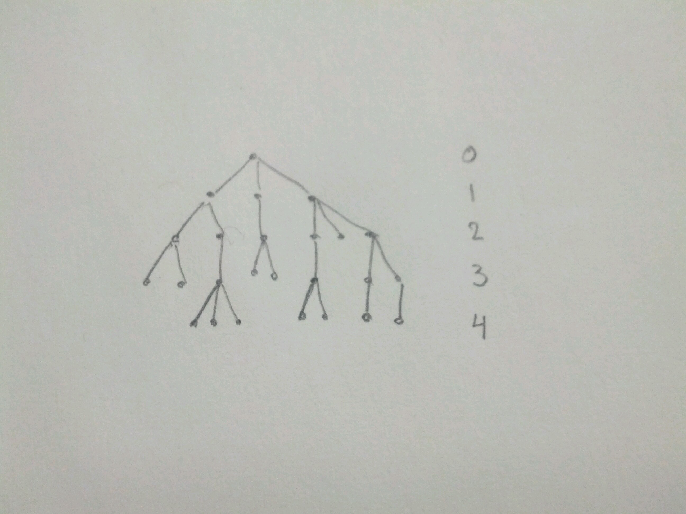

Notes on problems¶
1(b)
Simple Random Walk
\(A_{n,k}=\) set of paths starting in 0 and ending in \(k\) at time \(n\); \(k>0\).
\(B_{n,k}=\) paths in \(A_{n,k}\) that visit state 0 at least once after time 0.
\(C_{n,k}=\) paths in \(B_{n,k}\) where first step is down.
What is the \(P(A_{n,k} \backslash B_{n,k})\)

argue by a reflection argument (see image) that the number of paths in \(B_{n,k}\) is 2 times the number of paths in \(C_{n,k}\). Since each path in \(B_{n,k}\) is equally likely,
Then,
Where the probability of a given path is:
So,
by temporal and spatial homogeneity.
\(L=\) generation number of the most recent ancestor of two randomly chosen (with replacement) individuals in generation \(n\).
Condition on \(X_r=k\)
Argue that any individual in generation \(L\) is equally likely by a symmetry argument.
Argue that two randomly chosen individuals in generation \(n\) have the same common ancestor \(m\) in generation \(r\), conditioned on \(X_r=k\), is \(\frac{1}{k}\)
Classification of States¶
Relationships between pairs of states¶
Definition
For two states \(i\) and \(j\), we say that \(j\) is accessible from state \(i\) if \(p_{ij}(n) > 0\) for some \(n\).
Example
Branching Process with family size pmf \(f(k)\), \(k=0,1,2,...\) and \(f(0)>0\).
Further assume \(f(k) > 0\) for all \(k\).
Consider state \(i\) and \(j\) with \(i \neq 0\) and \(j \neq 0\).
State \(j\) is accessible from \(i\).
and similarly, \(i\) is accessible from \(j\).
If \(i>0\) and \(j=0\), then \(j\) is accessible from \(i\); however, \(i\) is not accessible from 0.
We write \(i \rightarrow j\) if \(j\) is accessible from \(i\) and \(i \nrightarrow j\) if not.
If \(i \rightarrow j\) and \(j \rightarrow i\) then we write \(i \leftrightarrow j\) and we say \(i\) communicates with \(j\)
Example
Simple Random Walk, with \(0<p<1\). Here, every pair of states \(i\) and \(j\) communicate.
If \(i \leftrightarrow j\), for all \(i,j \in S\), then we say the Markov chain is irreducible.
\(i \leftrightarrow i\) somce \(p_{ii}(0)=1\)
- i.e. \(\leftrightarrow\) is reflexive
\(i \leftrightarrow j \iff j \leftrightarrow i\).
- i.e. \(\leftrightarrow\) is commutative
If \(i \leftrightarrow j\) and \(j \leftrightarrow k\), then \(i \leftrightarrow k\).
Show that \(k\) is accessible from \(i\). - i.e. \(\leftrightarrow\) is transitive
These 3 properties make \(\leftrightarrow\) an equivalence relationship.
\(\leftrightarrow\) partitions the state space \(S\) into equivalence classes - where all states in the same class communicate with one another.
Every state \(i\) is in some equivalence class (the class containing \(i\))
State \(i\) cannot be in more than one equivalence class; suppose \(i \in C_1\) and \(i \in C_2\), then any state \(j\) in \(C_1\) communicates with \(i \in C_2\), and by transitivity, \(j\) communicates to every state in \(C_2\) (and vice versa), so \(C_1=C_2\).
Example
- For the simple random walk, there is only 1 equivalence class.
- For the branching process considered \(\{1,2,...\}\) \(\{0\}\) are the equivalence classes.